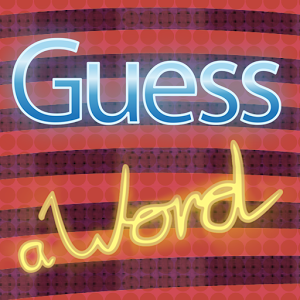
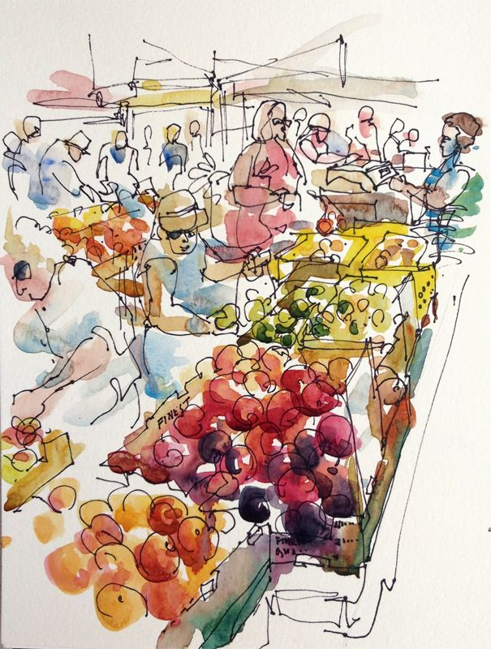

|  | word guess |
| This goal of this project was to build a word guessing game,using ASCII art. We had to design the game so the user could input a single letter at a time, and the user had a defined number of guesses before losing the game. If the guess was correct, the game would show a letter in the word display or if the guess was incorrect, reveal a part of the ASCII art. A player wins by guessing the word correctly, or loses by exhausting the alottment of guesses which reveals all the ASCII art. | |
Visit this project on Github:Word Guess |
bank accounts |
|
| This goal of this project was to build a module with multiple classes, class methods, inheritance as well as functionality to read csv files. The goal of the project was to be able to query through any means (or account) and get the information needed ie owner(s), balance(s), account id(s), etc... | |
Visit this project on Github:Bank Accounts |
|  | FarMar(Farmers Market) |
| This goal of this project was to build a module with multiple classes, class methods, as well as functionality to read csv files. We got practice writing specs and using TDD, we were working with raw data and using it to create instances of a Ruby class, and using Enumerable methods to work with collections of data or instances.A user should be able to be able to query through any means (or market, owner, product) and get the information needed ie owner(s), market(s), id(s), etc... | |
Visit this project on Github:FarMar |